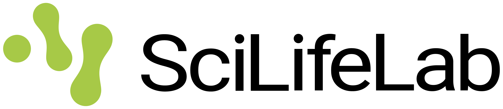
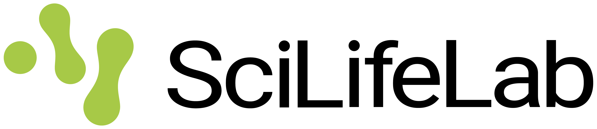

About OMOP 4 Sweden!
OMOP 4 Sweden! brings together a number of organisations in Swedish life science and healthcare who want to help Sweden build a competitive ability to effectively use our health data assets to generate valuable evidence for better healthcare.
With funding from Vinnova, through Swelife, OMOP 4 Sweden! intends to take important steps to create the necessary commitment and improved conditions for increased standardisation of Swedish health data, enabling effective secondary use.
Our initiative aims to improve the conditions for increasing and accelerating the use of the international data model OMOP, and its associated methods and open-source tools from the global network OHDSI, in Sweden.
OMOP and OHDSI can help Sweden build important local capacity for the effective secondary use of health data as part of a sustainable, standardised, interoperable and competitive ecosystem for health data.
Our Five Work Packages
Work Package 1: Build a Strong Consortium
Engage and coordinate actors representing all relevant stakeholder groups to form a strong multi-year consortium representing the Swedish health data ecosystem (healthcare, academia, industry, patient groups, and public organizations). Identify actors who want to implement OMOP and OHDSI tools.
Deliverables:
1.1. Established multi-helix consortium with stakeholders supporting a multi-year transformation initiative for increased OMOP/OHDSI use in Sweden
1.2. Mature dialogue and clear timeline for forming the national Swedish OMOP node with researchers, data partners and other actors
1.3. List of actors interested in implementing OMOP/OHDSI in Sweden
1.4. Map of local actors with capacity to support OMOP implementation efforts in Sweden
1.5. Project results officially handed over to SFMI and other potential recipients identified during the project
1.6. Project delivered on time, within scope, with regular contact with SweLife to meet expectations and requirements, plus status and financial reporting to funders
1.7. Communication: Key insights and results communicated through participants' and industry organizations' communication channels (e.g., social media) and through events
Responsible: Lars Lindsköld, SFMI
Work Package 2: Build an OMOP Case for Sweden
Define OMOP's target groups, their respective problem formulations, use cases, and needs. Clarify how OMOP and OHDSI can contribute to the Swedish health data ecosystem and document the value proposition for different stakeholders.
Deliverables:
2.1. Documented descriptions of target groups, use cases, challenges, needs, benefits and expected results from using OMOP and OHDSI
2.2. Documentation clarifying how OMOP/OHDSI can address problems and challenges formulated in the national life science strategy
Responsible: Jordan Kane, Stiftelsen Chalmers Industriteknik
Work Package 3: Capture International and National Expertise
Gather experiences, recommendations, success stories, and best practices from leading OMOP/OHDSI countries and experts. Collect input from international/national expertise and early users in Sweden, and adapt this to relevant national and European investigations, initiatives, established entities, and regulatory frameworks.
Deliverables:
3.1. Documented experiences and recommendations based on OMOP/OHDSI experts and practitioners from various parts of the world
3.2. List of relevant international standards, best practices, project examples and solutions for secondary use of health data
3.3. List of relevant national investigations, initiatives, established organizations, functions and regulatory frameworks (and possibly European ones if needed)
3.4. Documented connections and relationships between OMOP/OHDSI and selective investigations, initiatives, organizations and supervisory bodies related to secondary use of health data
3.5. International advisory group with leading experts supporting Sweden's OMOP work
Responsible: Christian Högberg, Passion 2 Improve
Work Package 4: OMOP pre-study in Sweden's largest registry organization (UCR)
This work package will perform a pre-study on how Uppsala Clinical Research Center's (UCR) registry platform and its organization can integrate and utilize OMOP in the best way. The study aims to identify use cases and opportunities where OMOP can create added value for UCR's operations, studies and strategic collaborations. Alternative ways to implement OMOP in UCR's operations and registry platform will be identified and defined. Furthermore, UCR's source data will be analyzed regarding structure, quality, terminologies, technology and standards to estimate transformation efforts.
Deliverables:
A final report, including a summary of analysis, results, alternatives and recommendations:
4:1 Strategic and organizational analysis
4:2 Data and technology analysis
4:3 Alternative and recommended approaches for implementing OMOP
4:4 Draft roadmap with estimated timelines
4:5 Internal and external resource needs
4:6 Requirements and specifications (technical, personnel, ownership, processes)
4:7 Training needs
4:8 Cost estimates
Responsible: Lars Halvorsen, Passion 2 Improve Sverige AB
Work Package 5: OMOP-pilot in respiratory diseases
Implementation of OMOP and OHDSI tools to enable fast, efficient and safe studies in the field of respiratory diseases, based on observational harmonized registry and administrative health data from selected authorities (National Board of Health and Welfare, Social Insurance Agency), regions (VGR, Region Stockholm, Region Skåne) and the Swedish Intensive Care Registry (SIR).
Deliverables:
Results from the data harmonization:
5.1 Initial analysis report
5.2 Document with the mapping of the data structure including validation
5.3 Results from the semantic mapping including validation
Results from the implementation of technical data infrastructure and software (OHDSI):
5.4 Document with infrastructure design
5.5 Documentation for the implementation
5.6 Docker containers (ETL, OHDSI tools, custom tools/scripts)
5.7 ETL source code (transfer of GitHub repository)
5.8 Report with the data validation
5.9 Documentation of maintenance guidelines
5.10 Training and educational materials
Results from studies and dissemination of the project's results and lessons learned
5.11 Summary documentation from completed studies
5.12 Completed dissemination of results and lessons learned to project participants and Swedish target groups (session + communication)
Responsible: Christian Högberg, Passion 2 Improve Sverige AB
Why have we initiated OMOP 4 Sweden!?
Sweden has fantastic health data assets that unfortunately are not being utilised to their full potential. There are many obstacles – legal, semantic, technical, human and organisational. Therefore, one of the priorities in Sweden's national strategy for life science is to increase the utilisation of health and care data for research, innovation, and the development of health and medical care, among other things.
OMOP and OHDSI have a portfolio of proven solutions that can help Sweden overcome some of the obstacles mentioned above, thereby building important local assets, competencies and foundations for the secure and effective secondary use of health data from both Swedish and international data partners.
Through OMOP and OHDSI, we can increase the standardisation of Swedish health data and thereby enable federated analysis and learning. It is worth mentioning that OHDSI's methods, tools, educational materials, and research study results are based on the principles of open science and open source, which makes them cost-effective.
Sweden is making major investments in eHealth and AI, in health data infrastructure, in precision medicine, in research for better healthcare, in attempts to improve the conditions for clinical studies, and in building a society that is more resilient to disease and future pandemics. All these initiatives can benefit from access to standardised health data, not only from Sweden, but also from our Nordic neighbours and other countries in Europe and around the world.
If Sweden succeeds in this endeavour, it will create enormous value for various players in Swedish life science, research, and healthcare. Last but not least, the evidence generated from our health data can help us create more effective healthcare, which in some cases can even save lives. That is why we have initiated OMOP 4 Sweden!
 
 
Voices From the Team
Why have we engaged with the initiative, and why is OMOP important for Sweden?
Why have I engaged in the OMOP 4 Sweden initiative?
A year ago I detected that Sweden has very rich health data assets, but we are far from leveraging them to their full potential. Everyone wants to make use of them, but there are a lot of barriers in place hindering us from turning them into value. OMOP can together with the methods, tools and talents from the global OHDSI community unlock some important barriers. These global OMOP-assets can enable us to leverage both our own health data sources as well as hundreds of international ones, and we can do it in a secure and more efficient and effective way, ultimately to improve healthcare and save lives. I want to see this coming into reality sooner rather than later.
Why do I think OMOP is important for Sweden?
OMOP is a global standard and data model for secondary use of health data. It comes with analytical standard methods, open source tools and a global network of thousands of talents engaged in analytical work converting many hundreds of health data sources into new evidence that is applied to improve healthcare policies and practices around the world. Sweden can generate significant value and impact, as well as increase our country's competitiveness, if we build strong capabilities to leverage these global OMOP-assets, prepare and make use of our own health data assets in this context, and establish efficient and effective collaborations in evidence generation to improve the lives of our patients, healthcare staff and other players in the life science ecosystem.
Why have I engaged in the OMOP 4 Sweden initiative?
As a medical informatician, I see how OpenEHR ensures data quality at the source, HL7 FHIR guarantees trustworthy and rapid exchange, and OMOP enables us to extract analytical meaning from our collective health data. This isn’t just a technical feat — it’s about enabling and empowering everyone at the frontline of care: doctors, nurses, and all the varied healthcare professions whose insights make a difference for patients. By bringing these structures together, we provide not only better data for everyday decision-making, but also create the conditions for research findings to travel swiftly — from bench to bedside, from idea to clinical reality. My engagement in OMOP is a commitment to making the “in-between” spaces and professions visible, relevant, and empowered.
Why do I think OMOP is important for Sweden?
Modern medical informatics, at its best, is a catalyst for change. By merging the solid clinical semantics of OpenEHR, the interoperability of HL7 FHIR, and the analytic reach of OMOP, we build a foundation where research and practice are not separate islands but intimate partners. OMOP allows us to quickly translate new research insights into actionable knowledge, accelerating the journey from data to discovery, and from discovery to improved care. This interconnected ecosystem benefits all: physicians, nurses, researchers, and patients alike. The faster we can make sense of health data together, the faster we can realize improvements in everyday clinical practice across Sweden.
“Interoperability is the silent current that lets insights cross the distance between research and care. In the collaboration between diverse professions and smart data models, we transform knowledge into direct patient benefit — and that is the real promise of health; supported by data and new tools .”
Meet the Team

Christian Högberg
Project Manager & Project Lead Work Package 3 Chalmers Industriteknik

Lars Linsköld, PhD
Project Lead Work Package 1 SFMI, EFMI, SciLifeLab (Uppsala University)

Jordan Kane, PhD
Project Lead Work Package 2 Chalmers Industriteknik

Sabine Koch, PhD
Professor & Head of Department Karolinska Institutet

Stefano Bonacina, PhD
Assistant Senior Lecturer Karolinska Institutet

Päivi Östling, PhD
Assoc. Professor & Group Lead SciLifeLab (KI)

Fredrik Nyberg, PhD
Professor Gothenburg University

Fredrik Lindén
Co-founder MyData Sweden

Johan Färnstrand
Managing Director Emperia Förvaltning

Rikard Lövström
Senior Health Data Expert Karolinska University Hospital, SciLifeLab (KI)

Lars S. Halvorsen
Co-founder & Managing Partner edenceHealth NV

Freija Descamps, PhD
Co-founder & Managing Partner edenceHealth NV

Daniel Granfeldt, PhD
HEOR/HTA Manager AbbVie

Johan Wärlegård
Market Access Manager AbbVie

Stefano Rapisarda, PhD
Database Coordinator SciLifeLab (KI)

Jan Lorenz
Product Owner - Precision Medicine SciLifeLab (KI)

Erik M. Åström
Strategic- & Economic Advisor & MSc in Economics Stockholm School of Economics

Jake Marshall
Head of Life Science and Public Sector Relationships NHS England
Our Advisors

Eric Fey, PhD
Development Manager Helsinki University Hospital

Niklas Norén, PhD
Chief Science Officer Uppsala Monitoring Center

Johanna Hultcrantz
Chief Innovation Officer Cambio Healthcare Systems

Helena Nilsson, PhD
Manager R&D Region Örebro

Peter Nordström
Program Directior Lunds Universitet (Swelife)

Sofie Gustafsson
Global Director of RWE Pfizer